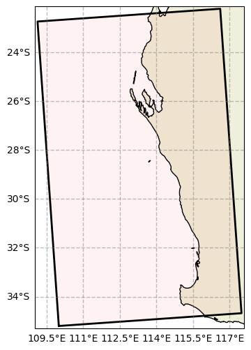
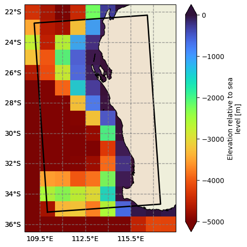
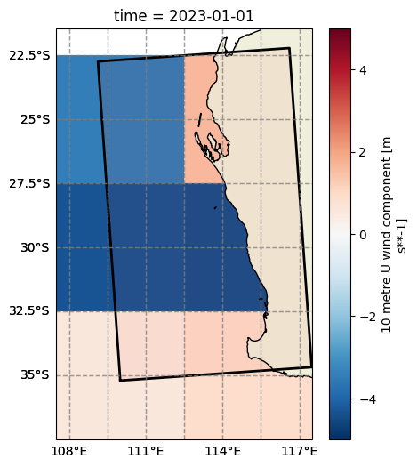
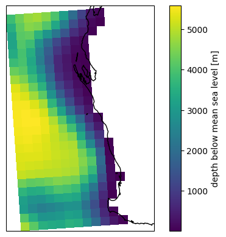
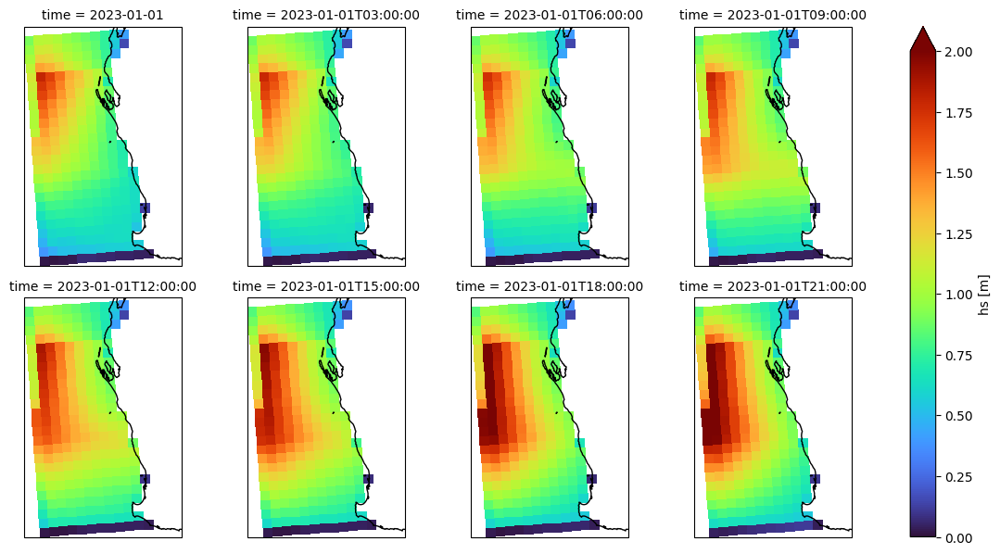
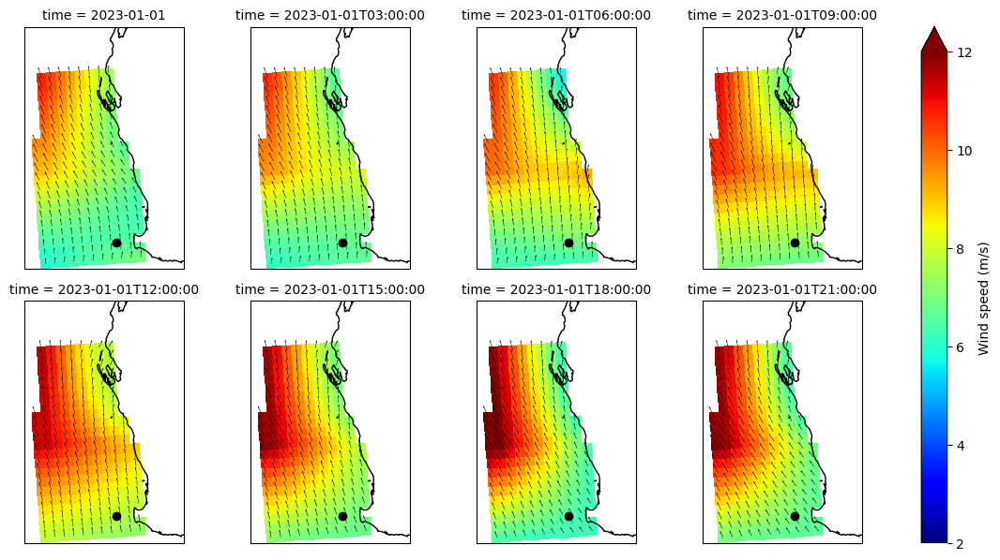
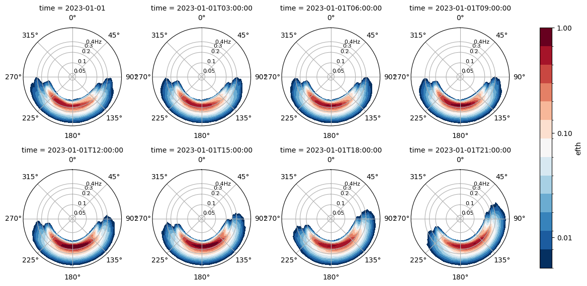
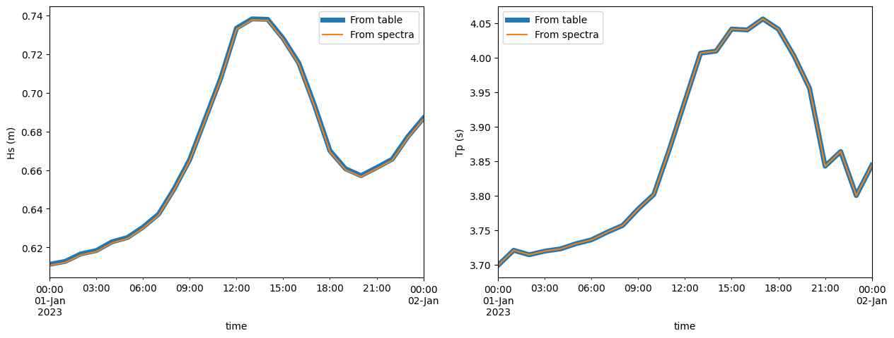

SWAN declarative example#
In this notebook we will run SWAN entirely from a model runtime and config entirely declared in a yaml file. We only plot some model settings to visualise before creating the model workspace
[1]:
%load_ext autoreload
%autoreload 2
from pathlib import Path
import yaml
import warnings
warnings.filterwarnings('ignore')
Instantiate model#
Use a fully-defined config from yaml to instantiate ModelRun with the runtime parameters and the config definition
[2]:
# Uncoment below to view the contents of the yaml file
# !cat example_declarative.yml
[3]:
from rompy.model import ModelRun
conf = yaml.load(open("example_declarative.yml"), Loader=yaml.Loader)
run = ModelRun(**conf)
run
[3]:
ModelRun(run_id='run1', period=TimeRange(start=datetime.datetime(2023, 1, 1, 0, 0), end=datetime.datetime(2023, 1, 2, 0, 0), duration=datetime.timedelta(days=1), interval=datetime.timedelta(seconds=3600), include_end=True), output_dir='example_declarative', config=SwanConfigComponents(model_type='swanconfig', template='/source/csiro/rompy/rompy/templates/swancomp', checkout='main', cgrid=REGULAR(model_type='regular', spectrum=SPECTRUM(model_type='spectrum', mdc=36, flow=0.04, fhigh=1.0, msc=None, dir1=None, dir2=None), grid=GRIDREGULAR(model_type='gridregular', xp=110.0, yp=-35.2, alp=4.0, xlen=7.5, ylen=12.5, mx=14, my=24, suffix='c')), startup=STARTUP(model_type='startup', project=PROJECT(model_type='project', name='Test declarative', nr='run1', title1='Declarative definition of a Swan config with rompy', title2=None, title3=None), set=SET(model_type='set', level=0.0, nor=None, depmin=0.05, maxmes=None, maxerr=None, grav=None, rho=None, cdcap=None, inrhog=None, hsrerr=None, direction_convention='nautical', pwtail=None, froudmax=None, icewind=None), mode=MODE(model_type='mode', kind='nonstationary', dim='twodimensional'), coordinates=COORDINATES(model_type='coordinates', kind=SPHERICAL(model_type='spherical', projection='ccm'), reapeating=False)), inpgrid=DataInterface(model_type='data_interface', bottom=SwanDataGrid(model_type='data_grid', id='data', source=SourceIntake(model_type='intake', dataset_id='gebco', catalog_uri='../../tests/data/catalog.yaml', kwargs={}), filter=Filter(sort={}, subset={}, crop={}, timenorm={}, rename={}, derived={}), variables=['elevation'], coords=DatasetCoords(t='time', x='lon', y='lat', z='depth'), crop_data=True, buffer=1.0, z1='elevation', z2=None, var=<GridOptions.BOTTOM: 'bottom'>, fac=-1.0), input=[SwanDataGrid(model_type='data_grid', id='data', source=SourceIntake(model_type='intake', dataset_id='era5', catalog_uri='../../tests/data/catalog.yaml', kwargs={}), filter=Filter(sort={'coords': ['latitude']}, subset={}, crop={}, timenorm={}, rename={}, derived={}), variables=['u10', 'v10'], coords=DatasetCoords(t='time', x='longitude', y='latitude', z='depth'), crop_data=True, buffer=2.0, z1='u10', z2='v10', var=<GridOptions.WIND: 'wind'>, fac=1.0)]), boundary=None, initial=INITIAL(model_type='initial', kind=DEFAULT(model_type='default')), physics=PHYSICS(model_type='physics', gen=GEN3(model_type='gen3', source_terms=WESTHUYSEN(model_type='westhuysen', wind_drag='wu', agrow=False, a=None, cds2=None, br=None)), sswell=None, negatinp=None, wcapping=None, quadrupl=QUADRUPL(model_type='quadrupl', iquad=2, lambd=None, cnl4=None, csh1=None, csh2=None, csh3=None), breaking=BREAKING_CONSTANT(model_type='constant', alpha=None, gamma=0.73), friction=FRICTION_MADSEN(model_type='madsen', kn=0.05), triad=TRIAD(model_type='triad', itriad=None, trfac=None, cutfr=None, a=None, b=None, ucrit=None, urslim=None), vegetation=None, mud=None, sice=None, turbulence=None, bragg=None, limiter=None, obstacle=None, setup=None, diffraction=None, surfbeat=None, scat=None, deactivate=None), prop=PROP(model_type='prop', scheme=BSBT(model_type='bsbt')), numeric=NUMERIC(model_type='numeric', stop=STOPC(model_type='stopc', dabs=0.05, drel=0.05, curvat=0.05, npnts=95.0, mode=NONSTAT(model_type='nonstat', mxitns=3), limiter=None), dirimpl=None, sigimpl=None, ctheta=None, csigma=None, setup=None), output=OUTPUT(model_type='output', frame=None, group=None, curve=None, ray=None, isoline=None, points=POINTS(model_type='points', sname='pts', xp=[114.0, 112.5, 115.0], yp=[-34.0, -26.0, -30.0]), ngrid=None, quantity=QUANTITIES(model_type='quantities', quantities=[QUANTITY(model_type='quantity', output=[<BlockOptions.DEPTH: 'depth'>, <BlockOptions.HSIGN: 'hsign'>, <BlockOptions.TPS: 'tps'>, <BlockOptions.DIR: 'dir'>, <BlockOptions.TM01: 'tm01'>], short=None, long=None, lexp=None, hexp=None, excv=-9.0, power=None, ref=None, fswell=None, noswll=None, fmin=None, fmax=None, coord=None), QUANTITY(model_type='quantity', output=[<BlockOptions.HSWELL: 'hswell'>], short=None, long=None, lexp=None, hexp=None, excv=None, power=None, ref=None, fswell=0.125, noswll=None, fmin=None, fmax=None, coord=None)]), output_options=None, block=BLOCK(model_type='block', sname='COMPGRID', fname='swangrid.nc', times=TimeRangeOpen(model_type='open', tbeg=datetime.datetime(1970, 1, 1, 0, 0), delt=datetime.timedelta(seconds=3600), tfmt=1, dfmt='hr', suffix='blk'), header=None, idla=None, output=[<BlockOptions.DEPTH: 'depth'>, <BlockOptions.WIND: 'wind'>, <BlockOptions.HSIGN: 'hsign'>, <BlockOptions.TPS: 'tps'>, <BlockOptions.DIR: 'dir'>], unit=None), table=TABLE(model_type='table', sname='pts', fname='swantable.txt', times=TimeRangeOpen(model_type='open', tbeg=datetime.datetime(1970, 1, 1, 0, 0), delt=datetime.timedelta(seconds=3600), tfmt=1, dfmt='hr', suffix='tbl'), format='header', output=[<BlockOptions.TIME: 'time'>, <BlockOptions.HSIGN: 'hsign'>, <BlockOptions.HSWELL: 'hswell'>, <BlockOptions.DIR: 'dir'>, <BlockOptions.TPS: 'tps'>, <BlockOptions.TM01: 'tm01'>]), specout=SPECOUT(model_type='specout', sname='pts', fname='swanspec.nc', times=TimeRangeOpen(model_type='open', tbeg=datetime.datetime(1970, 1, 1, 0, 0), delt=datetime.timedelta(seconds=3600), tfmt=1, dfmt='hr', suffix='spc'), dim=SPEC2D(model_type='spec2d'), freq=ABS(model_type='abs')), nestout=None, test=None), lockup=LOCKUP(model_type='lockup', compute=COMPUTE_NONSTAT(model_type='nonstat', times=NONSTATIONARY(model_type='nonstationary', tbeg=datetime.datetime(1970, 1, 1, 0, 0), delt=datetime.timedelta(seconds=3600), tfmt=1, dfmt='hr', suffix='c', tend=datetime.datetime(1970, 1, 2, 0, 0)), hotfile=HOTFILE(model_type='hotfile', fname=PosixPath('hotfile.txt'), format='free'), hottimes=[-1], suffix='_%Y%m%dT%H%M%S', initstat=True))))
QC config#
Plot model grid and data to QC before generating the workspace
[4]:
# Model grid
fig, ax = run.config.grid.plot(fscale=6)

[5]:
# Model bathy
bottom = run.config.inpgrid.bottom
bottom._filter_grid(run.config.grid) # This isn't necessary since cropping is done by the SwanConfigComponents, it is just for plotting
fig, ax = bottom.plot(param="elevation", vmin=-5000, vmax=0, cmap="turbo_r", figsize=(5, 6))
fig, ax = run.config.grid.plot(ax=ax)

[6]:
# Model winds
wind = run.config.inpgrid.input[0]
wind._filter_grid(run.config.grid) # This isn't necessary since cropping is done by the SwanConfigComponents, it is just for plotting
fig, ax = wind.plot(param="u10", isel={"time": 0}, vmin=-5, vmax=5, cmap="RdBu_r", figsize=(5, 6))
fig, ax = run.config.grid.plot(ax=ax)

Run the model#
[7]:
run()
INFO:rompy.model:
INFO:rompy.model:-----------------------------------------------------
INFO:rompy.model:Model settings:
INFO:rompy.model:
run_id: run1
period:
Start: 2023-01-01 00:00:00
End: 2023-01-02 00:00:00
Duration: 1 day, 0:00:00
Interval: 1:00:00
Include End: True
output_dir: example_declarative
config: <class 'rompy.swan.config.SwanConfigComponents'>
INFO:rompy.model:-----------------------------------------------------
INFO:rompy.model:Generating model input files in example_declarative
INFO:rompy.swan.data: Writing bottom to example_declarative/run1/bottom.grd
INFO:rompy.swan.data: Writing wind to example_declarative/run1/wind.grd
INFO:rompy.model:
INFO:rompy.model:Successfully generated project in example_declarative
INFO:rompy.model:-----------------------------------------------------
[7]:
'/source/csiro/rompy/notebooks/swan/example_declarative/run1'
Check the workspace#
[8]:
modeldir = Path(run.output_dir) / run.run_id
sorted(modeldir.glob("*"))
[8]:
[PosixPath('example_declarative/run1/INPUT'),
PosixPath('example_declarative/run1/PRINT'),
PosixPath('example_declarative/run1/bottom.grd'),
PosixPath('example_declarative/run1/hotfile_20230102T000000.txt'),
PosixPath('example_declarative/run1/norm_end'),
PosixPath('example_declarative/run1/swangrid.nc'),
PosixPath('example_declarative/run1/swaninit'),
PosixPath('example_declarative/run1/swanspec.nc'),
PosixPath('example_declarative/run1/swantable.txt'),
PosixPath('example_declarative/run1/wind.grd')]
[9]:
input = modeldir / "INPUT"
print(input.read_text())
! Rompy SwanConfig
! Template: /source/csiro/rompy/rompy/templates/swancomp
! Generated: 2023-11-09 19:09:33.215731 on rafael-XPS by rguedes
! Startup -------------------------------------------------------------------------------------------------------------------------------------------------------------------------
PROJECT name='Test declarative' nr='run1' title1='Declarative definition of a Swan config with rompy'
SET level=0.0 depmin=0.05 NAUTICAL
MODE NONSTATIONARY TWODIMENSIONAL
COORDINATES SPHERICAL CCM
! Computational Grid --------------------------------------------------------------------------------------------------------------------------------------------------------------
CGRID REGULAR xpc=110.0 ypc=-35.2 alpc=4.0 xlenc=7.5 ylenc=12.5 mxc=14 myc=24 CIRCLE mdc=36 flow=0.04 fhigh=1.0
! Input Grids ---------------------------------------------------------------------------------------------------------------------------------------------------------------------
INPGRID BOTTOM REG 109.0 -36.0 0.0 9 14 1.0 1.0 EXC -99.0
READINP BOTTOM -1.0 'bottom.grd' 3 FREE
INPGRID WIND REG 110.0 -35.0 0.0 1 2 5.0 5.0 EXC -99.0 NONSTATION 20230101.000000 6.0 HR
READINP WIND 1.0 'wind.grd' 3 0 1 0 FREE
! Boundary and Initial conditions -------------------------------------------------------------------------------------------------------------------------------------------------
INITIAL DEFAULT
! Physics -------------------------------------------------------------------------------------------------------------------------------------------------------------------------
GEN3 WESTHUYSEN DRAG WU
QUADRUPL iquad=2
BREAKING CONSTANT gamma=0.73
FRICTION MADSEN kn=0.05
TRIAD
! Numerics ------------------------------------------------------------------------------------------------------------------------------------------------------------------------
PROP BSBT
NUMERIC STOPC dabs=0.05 drel=0.05 curvat=0.05 npnts=95.0 NONSTATIONARY mxitns=3
! Output --------------------------------------------------------------------------------------------------------------------------------------------------------------------------
POINTS sname='pts' &
xp=114.0 yp=-34.0 &
xp=112.5 yp=-26.0 &
xp=115.0 yp=-30.0
QUANTITY DEPTH HSIGN TPS DIR TM01 excv=-9.0
QUANTITY HSWELL fswell=0.125
BLOCK sname='COMPGRID' fname='swangrid.nc' &
DEPTH &
WIND &
HSIGN &
TPS &
DIR &
OUTPUT tbegblk=20230101.000000 deltblk=1.0 HR
TABLE sname='pts' HEADER fname='swantable.txt' &
TIME &
HSIGN &
HSWELL &
DIR &
TPS &
TM01 &
OUTPUT tbegtbl=20230101.000000 delttbl=1.0 HR
SPECOUT sname='pts' SPEC2D ABS fname='swanspec.nc' OUTPUT tbegspc=20230101.000000 deltspc=1.0 HR
! Lockup --------------------------------------------------------------------------------------------------------------------------------------------------------------------------
COMPUTE STATIONARY time=20230101.000000
COMPUTE NONSTATIONARY tbegc=20230101.000000 deltc=1.0 HR tendc=20230102.000000
HOTFILE fname='hotfile_20230102T000000.txt' FREE
STOP
Run the model#
[10]:
!docker run -v ./example_declarative/run1:/home oceanum/swan:4141 swan.exe
SWAN is preparing computation
iteration 1; sweep 1
+iteration 1; sweep 2
+iteration 1; sweep 3
+iteration 1; sweep 4
not possible to compute, first iteration
iteration 2; sweep 1
+iteration 2; sweep 2
+iteration 2; sweep 3
+iteration 2; sweep 4
accuracy OK in 45.28 % of wet grid points ( 95.00 % required)
iteration 3; sweep 1
+iteration 3; sweep 2
+iteration 3; sweep 3
+iteration 3; sweep 4
accuracy OK in 0.79 % of wet grid points ( 95.00 % required)
iteration 4; sweep 1
+iteration 4; sweep 2
+iteration 4; sweep 3
+iteration 4; sweep 4
accuracy OK in 56.70 % of wet grid points ( 95.00 % required)
iteration 5; sweep 1
+iteration 5; sweep 2
+iteration 5; sweep 3
+iteration 5; sweep 4
accuracy OK in 20.87 % of wet grid points ( 95.00 % required)
iteration 6; sweep 1
+iteration 6; sweep 2
+iteration 6; sweep 3
+iteration 6; sweep 4
accuracy OK in 85.83 % of wet grid points ( 95.00 % required)
iteration 7; sweep 1
+iteration 7; sweep 2
+iteration 7; sweep 3
+iteration 7; sweep 4
accuracy OK in 96.86 % of wet grid points ( 95.00 % required)
+SWAN is processing output request 1
+SWAN is processing output request 2
+SWAN is processing output request 3
+time 20230101.010000 , step 1; iteration 1; sweep 1
+time 20230101.010000 , step 1; iteration 1; sweep 2
+time 20230101.010000 , step 1; iteration 1; sweep 3
+time 20230101.010000 , step 1; iteration 1; sweep 4
+time 20230101.010000 , step 1; iteration 2; sweep 1
+time 20230101.010000 , step 1; iteration 2; sweep 2
+time 20230101.010000 , step 1; iteration 2; sweep 3
+time 20230101.010000 , step 1; iteration 2; sweep 4
+time 20230101.010000 , step 1; iteration 3; sweep 1
+time 20230101.010000 , step 1; iteration 3; sweep 2
+time 20230101.010000 , step 1; iteration 3; sweep 3
+time 20230101.010000 , step 1; iteration 3; sweep 4
+SWAN is processing output request 1
+SWAN is processing output request 2
+SWAN is processing output request 3
+time 20230101.020000 , step 2; iteration 1; sweep 1
+time 20230101.020000 , step 2; iteration 1; sweep 2
+time 20230101.020000 , step 2; iteration 1; sweep 3
+time 20230101.020000 , step 2; iteration 1; sweep 4
+time 20230101.020000 , step 2; iteration 2; sweep 1
+time 20230101.020000 , step 2; iteration 2; sweep 2
+time 20230101.020000 , step 2; iteration 2; sweep 3
+time 20230101.020000 , step 2; iteration 2; sweep 4
+time 20230101.020000 , step 2; iteration 3; sweep 1
+time 20230101.020000 , step 2; iteration 3; sweep 2
+time 20230101.020000 , step 2; iteration 3; sweep 3
+time 20230101.020000 , step 2; iteration 3; sweep 4
+SWAN is processing output request 1
+SWAN is processing output request 2
+SWAN is processing output request 3
+time 20230101.030000 , step 3; iteration 1; sweep 1
+time 20230101.030000 , step 3; iteration 1; sweep 2
+time 20230101.030000 , step 3; iteration 1; sweep 3
+time 20230101.030000 , step 3; iteration 1; sweep 4
+time 20230101.030000 , step 3; iteration 2; sweep 1
+time 20230101.030000 , step 3; iteration 2; sweep 2
+time 20230101.030000 , step 3; iteration 2; sweep 3
+time 20230101.030000 , step 3; iteration 2; sweep 4
+time 20230101.030000 , step 3; iteration 3; sweep 1
+time 20230101.030000 , step 3; iteration 3; sweep 2
+time 20230101.030000 , step 3; iteration 3; sweep 3
+time 20230101.030000 , step 3; iteration 3; sweep 4
+SWAN is processing output request 1
+SWAN is processing output request 2
+SWAN is processing output request 3
+time 20230101.040000 , step 4; iteration 1; sweep 1
+time 20230101.040000 , step 4; iteration 1; sweep 2
+time 20230101.040000 , step 4; iteration 1; sweep 3
+time 20230101.040000 , step 4; iteration 1; sweep 4
+time 20230101.040000 , step 4; iteration 2; sweep 1
+time 20230101.040000 , step 4; iteration 2; sweep 2
+time 20230101.040000 , step 4; iteration 2; sweep 3
+time 20230101.040000 , step 4; iteration 2; sweep 4
+time 20230101.040000 , step 4; iteration 3; sweep 1
+time 20230101.040000 , step 4; iteration 3; sweep 2
+time 20230101.040000 , step 4; iteration 3; sweep 3
+time 20230101.040000 , step 4; iteration 3; sweep 4
+SWAN is processing output request 1
+SWAN is processing output request 2
+SWAN is processing output request 3
+time 20230101.050000 , step 5; iteration 1; sweep 1
+time 20230101.050000 , step 5; iteration 1; sweep 2
+time 20230101.050000 , step 5; iteration 1; sweep 3
+time 20230101.050000 , step 5; iteration 1; sweep 4
+time 20230101.050000 , step 5; iteration 2; sweep 1
+time 20230101.050000 , step 5; iteration 2; sweep 2
+time 20230101.050000 , step 5; iteration 2; sweep 3
+time 20230101.050000 , step 5; iteration 2; sweep 4
+time 20230101.050000 , step 5; iteration 3; sweep 1
+time 20230101.050000 , step 5; iteration 3; sweep 2
+time 20230101.050000 , step 5; iteration 3; sweep 3
+time 20230101.050000 , step 5; iteration 3; sweep 4
+SWAN is processing output request 1
+SWAN is processing output request 2
+SWAN is processing output request 3
+time 20230101.060000 , step 6; iteration 1; sweep 1
+time 20230101.060000 , step 6; iteration 1; sweep 2
+time 20230101.060000 , step 6; iteration 1; sweep 3
+time 20230101.060000 , step 6; iteration 1; sweep 4
+time 20230101.060000 , step 6; iteration 2; sweep 1
+time 20230101.060000 , step 6; iteration 2; sweep 2
+time 20230101.060000 , step 6; iteration 2; sweep 3
+time 20230101.060000 , step 6; iteration 2; sweep 4
+time 20230101.060000 , step 6; iteration 3; sweep 1
+time 20230101.060000 , step 6; iteration 3; sweep 2
+time 20230101.060000 , step 6; iteration 3; sweep 3
+time 20230101.060000 , step 6; iteration 3; sweep 4
+SWAN is processing output request 1
+SWAN is processing output request 2
+SWAN is processing output request 3
+time 20230101.070000 , step 7; iteration 1; sweep 1
+time 20230101.070000 , step 7; iteration 1; sweep 2
+time 20230101.070000 , step 7; iteration 1; sweep 3
+time 20230101.070000 , step 7; iteration 1; sweep 4
+time 20230101.070000 , step 7; iteration 2; sweep 1
+time 20230101.070000 , step 7; iteration 2; sweep 2
+time 20230101.070000 , step 7; iteration 2; sweep 3
+time 20230101.070000 , step 7; iteration 2; sweep 4
+time 20230101.070000 , step 7; iteration 3; sweep 1
+time 20230101.070000 , step 7; iteration 3; sweep 2
+time 20230101.070000 , step 7; iteration 3; sweep 3
+time 20230101.070000 , step 7; iteration 3; sweep 4
+SWAN is processing output request 1
+SWAN is processing output request 2
+SWAN is processing output request 3
+time 20230101.080000 , step 8; iteration 1; sweep 1
+time 20230101.080000 , step 8; iteration 1; sweep 2
+time 20230101.080000 , step 8; iteration 1; sweep 3
+time 20230101.080000 , step 8; iteration 1; sweep 4
+time 20230101.080000 , step 8; iteration 2; sweep 1
+time 20230101.080000 , step 8; iteration 2; sweep 2
+time 20230101.080000 , step 8; iteration 2; sweep 3
+time 20230101.080000 , step 8; iteration 2; sweep 4
+time 20230101.080000 , step 8; iteration 3; sweep 1
+time 20230101.080000 , step 8; iteration 3; sweep 2
+time 20230101.080000 , step 8; iteration 3; sweep 3
+time 20230101.080000 , step 8; iteration 3; sweep 4
+SWAN is processing output request 1
+SWAN is processing output request 2
+SWAN is processing output request 3
+time 20230101.090000 , step 9; iteration 1; sweep 1
+time 20230101.090000 , step 9; iteration 1; sweep 2
+time 20230101.090000 , step 9; iteration 1; sweep 3
+time 20230101.090000 , step 9; iteration 1; sweep 4
+time 20230101.090000 , step 9; iteration 2; sweep 1
+time 20230101.090000 , step 9; iteration 2; sweep 2
+time 20230101.090000 , step 9; iteration 2; sweep 3
+time 20230101.090000 , step 9; iteration 2; sweep 4
+time 20230101.090000 , step 9; iteration 3; sweep 1
+time 20230101.090000 , step 9; iteration 3; sweep 2
+time 20230101.090000 , step 9; iteration 3; sweep 3
+time 20230101.090000 , step 9; iteration 3; sweep 4
+SWAN is processing output request 1
+SWAN is processing output request 2
+SWAN is processing output request 3
+time 20230101.100000 , step 10; iteration 1; sweep 1
+time 20230101.100000 , step 10; iteration 1; sweep 2
+time 20230101.100000 , step 10; iteration 1; sweep 3
+time 20230101.100000 , step 10; iteration 1; sweep 4
+time 20230101.100000 , step 10; iteration 2; sweep 1
+time 20230101.100000 , step 10; iteration 2; sweep 2
+time 20230101.100000 , step 10; iteration 2; sweep 3
+time 20230101.100000 , step 10; iteration 2; sweep 4
+time 20230101.100000 , step 10; iteration 3; sweep 1
+time 20230101.100000 , step 10; iteration 3; sweep 2
+time 20230101.100000 , step 10; iteration 3; sweep 3
+time 20230101.100000 , step 10; iteration 3; sweep 4
+SWAN is processing output request 1
+SWAN is processing output request 2
+SWAN is processing output request 3
+time 20230101.110000 , step 11; iteration 1; sweep 1
+time 20230101.110000 , step 11; iteration 1; sweep 2
+time 20230101.110000 , step 11; iteration 1; sweep 3
+time 20230101.110000 , step 11; iteration 1; sweep 4
+time 20230101.110000 , step 11; iteration 2; sweep 1
+time 20230101.110000 , step 11; iteration 2; sweep 2
+time 20230101.110000 , step 11; iteration 2; sweep 3
+time 20230101.110000 , step 11; iteration 2; sweep 4
+time 20230101.110000 , step 11; iteration 3; sweep 1
+time 20230101.110000 , step 11; iteration 3; sweep 2
+time 20230101.110000 , step 11; iteration 3; sweep 3
+time 20230101.110000 , step 11; iteration 3; sweep 4
+SWAN is processing output request 1
+SWAN is processing output request 2
+SWAN is processing output request 3
+time 20230101.120000 , step 12; iteration 1; sweep 1
+time 20230101.120000 , step 12; iteration 1; sweep 2
+time 20230101.120000 , step 12; iteration 1; sweep 3
+time 20230101.120000 , step 12; iteration 1; sweep 4
+time 20230101.120000 , step 12; iteration 2; sweep 1
+time 20230101.120000 , step 12; iteration 2; sweep 2
+time 20230101.120000 , step 12; iteration 2; sweep 3
+time 20230101.120000 , step 12; iteration 2; sweep 4
+time 20230101.120000 , step 12; iteration 3; sweep 1
+time 20230101.120000 , step 12; iteration 3; sweep 2
+time 20230101.120000 , step 12; iteration 3; sweep 3
+time 20230101.120000 , step 12; iteration 3; sweep 4
+SWAN is processing output request 1
+SWAN is processing output request 2
+SWAN is processing output request 3
+time 20230101.130000 , step 13; iteration 1; sweep 1
+time 20230101.130000 , step 13; iteration 1; sweep 2
+time 20230101.130000 , step 13; iteration 1; sweep 3
+time 20230101.130000 , step 13; iteration 1; sweep 4
+time 20230101.130000 , step 13; iteration 2; sweep 1
+time 20230101.130000 , step 13; iteration 2; sweep 2
+time 20230101.130000 , step 13; iteration 2; sweep 3
+time 20230101.130000 , step 13; iteration 2; sweep 4
+time 20230101.130000 , step 13; iteration 3; sweep 1
+time 20230101.130000 , step 13; iteration 3; sweep 2
+time 20230101.130000 , step 13; iteration 3; sweep 3
+time 20230101.130000 , step 13; iteration 3; sweep 4
+SWAN is processing output request 1
+SWAN is processing output request 2
+SWAN is processing output request 3
+time 20230101.140000 , step 14; iteration 1; sweep 1
+time 20230101.140000 , step 14; iteration 1; sweep 2
+time 20230101.140000 , step 14; iteration 1; sweep 3
+time 20230101.140000 , step 14; iteration 1; sweep 4
+time 20230101.140000 , step 14; iteration 2; sweep 1
+time 20230101.140000 , step 14; iteration 2; sweep 2
+time 20230101.140000 , step 14; iteration 2; sweep 3
+time 20230101.140000 , step 14; iteration 2; sweep 4
+time 20230101.140000 , step 14; iteration 3; sweep 1
+time 20230101.140000 , step 14; iteration 3; sweep 2
+time 20230101.140000 , step 14; iteration 3; sweep 3
+time 20230101.140000 , step 14; iteration 3; sweep 4
+SWAN is processing output request 1
+SWAN is processing output request 2
+SWAN is processing output request 3
+time 20230101.150000 , step 15; iteration 1; sweep 1
+time 20230101.150000 , step 15; iteration 1; sweep 2
+time 20230101.150000 , step 15; iteration 1; sweep 3
+time 20230101.150000 , step 15; iteration 1; sweep 4
+time 20230101.150000 , step 15; iteration 2; sweep 1
+time 20230101.150000 , step 15; iteration 2; sweep 2
+time 20230101.150000 , step 15; iteration 2; sweep 3
+time 20230101.150000 , step 15; iteration 2; sweep 4
+time 20230101.150000 , step 15; iteration 3; sweep 1
+time 20230101.150000 , step 15; iteration 3; sweep 2
+time 20230101.150000 , step 15; iteration 3; sweep 3
+time 20230101.150000 , step 15; iteration 3; sweep 4
+SWAN is processing output request 1
+SWAN is processing output request 2
+SWAN is processing output request 3
+time 20230101.160000 , step 16; iteration 1; sweep 1
+time 20230101.160000 , step 16; iteration 1; sweep 2
+time 20230101.160000 , step 16; iteration 1; sweep 3
+time 20230101.160000 , step 16; iteration 1; sweep 4
+time 20230101.160000 , step 16; iteration 2; sweep 1
+time 20230101.160000 , step 16; iteration 2; sweep 2
+time 20230101.160000 , step 16; iteration 2; sweep 3
+time 20230101.160000 , step 16; iteration 2; sweep 4
+time 20230101.160000 , step 16; iteration 3; sweep 1
+time 20230101.160000 , step 16; iteration 3; sweep 2
+time 20230101.160000 , step 16; iteration 3; sweep 3
+time 20230101.160000 , step 16; iteration 3; sweep 4
+SWAN is processing output request 1
+SWAN is processing output request 2
+SWAN is processing output request 3
+time 20230101.170000 , step 17; iteration 1; sweep 1
+time 20230101.170000 , step 17; iteration 1; sweep 2
+time 20230101.170000 , step 17; iteration 1; sweep 3
+time 20230101.170000 , step 17; iteration 1; sweep 4
+time 20230101.170000 , step 17; iteration 2; sweep 1
+time 20230101.170000 , step 17; iteration 2; sweep 2
+time 20230101.170000 , step 17; iteration 2; sweep 3
+time 20230101.170000 , step 17; iteration 2; sweep 4
+time 20230101.170000 , step 17; iteration 3; sweep 1
+time 20230101.170000 , step 17; iteration 3; sweep 2
+time 20230101.170000 , step 17; iteration 3; sweep 3
+time 20230101.170000 , step 17; iteration 3; sweep 4
+SWAN is processing output request 1
+SWAN is processing output request 2
+SWAN is processing output request 3
+time 20230101.180000 , step 18; iteration 1; sweep 1
+time 20230101.180000 , step 18; iteration 1; sweep 2
+time 20230101.180000 , step 18; iteration 1; sweep 3
+time 20230101.180000 , step 18; iteration 1; sweep 4
+time 20230101.180000 , step 18; iteration 2; sweep 1
+time 20230101.180000 , step 18; iteration 2; sweep 2
+time 20230101.180000 , step 18; iteration 2; sweep 3
+time 20230101.180000 , step 18; iteration 2; sweep 4
+time 20230101.180000 , step 18; iteration 3; sweep 1
+time 20230101.180000 , step 18; iteration 3; sweep 2
+time 20230101.180000 , step 18; iteration 3; sweep 3
+time 20230101.180000 , step 18; iteration 3; sweep 4
+SWAN is processing output request 1
+SWAN is processing output request 2
+SWAN is processing output request 3
+time 20230101.190000 , step 19; iteration 1; sweep 1
+time 20230101.190000 , step 19; iteration 1; sweep 2
+time 20230101.190000 , step 19; iteration 1; sweep 3
+time 20230101.190000 , step 19; iteration 1; sweep 4
+time 20230101.190000 , step 19; iteration 2; sweep 1
+time 20230101.190000 , step 19; iteration 2; sweep 2
+time 20230101.190000 , step 19; iteration 2; sweep 3
+time 20230101.190000 , step 19; iteration 2; sweep 4
+time 20230101.190000 , step 19; iteration 3; sweep 1
+time 20230101.190000 , step 19; iteration 3; sweep 2
+time 20230101.190000 , step 19; iteration 3; sweep 3
+time 20230101.190000 , step 19; iteration 3; sweep 4
+SWAN is processing output request 1
+SWAN is processing output request 2
+SWAN is processing output request 3
+time 20230101.200000 , step 20; iteration 1; sweep 1
+time 20230101.200000 , step 20; iteration 1; sweep 2
+time 20230101.200000 , step 20; iteration 1; sweep 3
+time 20230101.200000 , step 20; iteration 1; sweep 4
+time 20230101.200000 , step 20; iteration 2; sweep 1
+time 20230101.200000 , step 20; iteration 2; sweep 2
+time 20230101.200000 , step 20; iteration 2; sweep 3
+time 20230101.200000 , step 20; iteration 2; sweep 4
+time 20230101.200000 , step 20; iteration 3; sweep 1
+time 20230101.200000 , step 20; iteration 3; sweep 2
+time 20230101.200000 , step 20; iteration 3; sweep 3
+time 20230101.200000 , step 20; iteration 3; sweep 4
+SWAN is processing output request 1
+SWAN is processing output request 2
+SWAN is processing output request 3
+time 20230101.210000 , step 21; iteration 1; sweep 1
+time 20230101.210000 , step 21; iteration 1; sweep 2
+time 20230101.210000 , step 21; iteration 1; sweep 3
+time 20230101.210000 , step 21; iteration 1; sweep 4
+time 20230101.210000 , step 21; iteration 2; sweep 1
+time 20230101.210000 , step 21; iteration 2; sweep 2
+time 20230101.210000 , step 21; iteration 2; sweep 3
+time 20230101.210000 , step 21; iteration 2; sweep 4
+time 20230101.210000 , step 21; iteration 3; sweep 1
+time 20230101.210000 , step 21; iteration 3; sweep 2
+time 20230101.210000 , step 21; iteration 3; sweep 3
+time 20230101.210000 , step 21; iteration 3; sweep 4
+SWAN is processing output request 1
+SWAN is processing output request 2
+SWAN is processing output request 3
+time 20230101.220000 , step 22; iteration 1; sweep 1
+time 20230101.220000 , step 22; iteration 1; sweep 2
+time 20230101.220000 , step 22; iteration 1; sweep 3
+time 20230101.220000 , step 22; iteration 1; sweep 4
+time 20230101.220000 , step 22; iteration 2; sweep 1
+time 20230101.220000 , step 22; iteration 2; sweep 2
+time 20230101.220000 , step 22; iteration 2; sweep 3
+time 20230101.220000 , step 22; iteration 2; sweep 4
+time 20230101.220000 , step 22; iteration 3; sweep 1
+time 20230101.220000 , step 22; iteration 3; sweep 2
+time 20230101.220000 , step 22; iteration 3; sweep 3
+time 20230101.220000 , step 22; iteration 3; sweep 4
+SWAN is processing output request 1
+SWAN is processing output request 2
+SWAN is processing output request 3
+time 20230101.230000 , step 23; iteration 1; sweep 1
+time 20230101.230000 , step 23; iteration 1; sweep 2
+time 20230101.230000 , step 23; iteration 1; sweep 3
+time 20230101.230000 , step 23; iteration 1; sweep 4
+time 20230101.230000 , step 23; iteration 2; sweep 1
+time 20230101.230000 , step 23; iteration 2; sweep 2
+time 20230101.230000 , step 23; iteration 2; sweep 3
+time 20230101.230000 , step 23; iteration 2; sweep 4
+time 20230101.230000 , step 23; iteration 3; sweep 1
+time 20230101.230000 , step 23; iteration 3; sweep 2
+time 20230101.230000 , step 23; iteration 3; sweep 3
+time 20230101.230000 , step 23; iteration 3; sweep 4
+SWAN is processing output request 1
+SWAN is processing output request 2
+SWAN is processing output request 3
+time 20230102.000000 , step 24; iteration 1; sweep 1
+time 20230102.000000 , step 24; iteration 1; sweep 2
+time 20230102.000000 , step 24; iteration 1; sweep 3
+time 20230102.000000 , step 24; iteration 1; sweep 4
+time 20230102.000000 , step 24; iteration 2; sweep 1
+time 20230102.000000 , step 24; iteration 2; sweep 2
+time 20230102.000000 , step 24; iteration 2; sweep 3
+time 20230102.000000 , step 24; iteration 2; sweep 4
+time 20230102.000000 , step 24; iteration 3; sweep 1
+time 20230102.000000 , step 24; iteration 3; sweep 2
+time 20230102.000000 , step 24; iteration 3; sweep 3
+time 20230102.000000 , step 24; iteration 3; sweep 4
+SWAN is processing output request 1
+SWAN is processing output request 2
+SWAN is processing output request 3
Plot outputs#
[11]:
import os
import numpy as np
import pandas as pd
import xarray as xr
import matplotlib.pyplot as plt
import cartopy.crs as ccrs
from wavespectra import read_ncswan
from wavespectra.core.swan import read_tab
pd.set_option("display.notebook_repr_html", False)
[12]:
modeldir = Path(run.output_dir) / run.run_id
sorted(modeldir.glob("*"))
[12]:
[PosixPath('example_declarative/run1/INPUT'),
PosixPath('example_declarative/run1/PRINT'),
PosixPath('example_declarative/run1/bottom.grd'),
PosixPath('example_declarative/run1/hotfile_20230102T000000.txt'),
PosixPath('example_declarative/run1/norm_end'),
PosixPath('example_declarative/run1/swangrid.nc'),
PosixPath('example_declarative/run1/swaninit'),
PosixPath('example_declarative/run1/swanspec.nc'),
PosixPath('example_declarative/run1/swantable.txt'),
PosixPath('example_declarative/run1/wind.grd')]
[13]:
# Gridded output
dsgrid = xr.open_dataset(modeldir / run.config.output.block.fname)
dsgrid
[13]:
<xarray.Dataset>
Dimensions: (time: 25, yc: 25, xc: 15)
Coordinates:
* time (time) datetime64[ns] 2023-01-01 ... 2023-01-02
longitude (yc, xc) float32 ...
latitude (yc, xc) float32 ...
Dimensions without coordinates: yc, xc
Data variables:
depth (time, yc, xc) float32 ...
xwnd (time, yc, xc) float32 ...
ywnd (time, yc, xc) float32 ...
hs (time, yc, xc) float32 ...
tps (time, yc, xc) float32 ...
theta0 (time, yc, xc) float32 ...
Attributes:
Conventions: CF-1.5
History: Created with agioncmd version 1.5
Directional_convention: nautical
project: Test declarative
run: run1[14]:
# Spectra output
dspec = read_ncswan(modeldir / run.config.output.specout.fname)
dspec
[14]:
<xarray.Dataset>
Dimensions: (time: 25, site: 3, freq: 35, dir: 36)
Coordinates:
* time (time) datetime64[ns] 2023-01-01 2023-01-01T01:00:00 ... 2023-01-02
* freq (freq) float32 0.04 0.04397 0.04834 0.05314 ... 0.8275 0.9097 1.0
* dir (dir) float32 261.0 251.0 241.0 231.0 ... 301.0 291.0 281.0 271.0
* site (site) int64 1 2 3
Data variables:
lon (site) float32 dask.array<chunksize=(3,), meta=np.ndarray>
lat (site) float32 dask.array<chunksize=(3,), meta=np.ndarray>
efth (time, site, freq, dir) float32 dask.array<chunksize=(25, 3, 35, 36), meta=np.ndarray>
dpt (time, site) float32 dask.array<chunksize=(25, 3), meta=np.ndarray>
wspd (time, site) float32 dask.array<chunksize=(25, 3), meta=np.ndarray>
wdir (time, site) float32 dask.array<chunksize=(25, 3), meta=np.ndarray>
Attributes:
Conventions: CF-1.5
History: Created with agioncmd version 1.5
Directional_convention: nautical
project: Test declarative
model: 41.41
run: run1[15]:
os.system(f"head -n 15 {modeldir / run.config.output.table.fname}")
%
%
% Run:run1 Table:pts SWAN version:41.41
%
% Time Hsig Hswell Dir TPsmoo Tm01
% [ ] [m] [m] [degr] [sec] [sec]
%
20230101.000000 0.61126 0.00002 183.186 3.6992 2.7202
20230101.000000 1.07937 0.03900 176.467 4.9832 3.7063
20230101.000000 -9.00000 -9.00000 -9.000 -9.0000 -9.0000
20230101.010000 0.61275 0.00002 182.850 3.7210 2.7083
20230101.010000 1.07086 0.03935 176.350 5.0704 3.6928
20230101.010000 -9.00000 -9.00000 -9.000 -9.0000 -9.0000
20230101.020000 0.61664 0.00002 182.787 3.7145 2.7083
20230101.020000 1.06328 0.03973 176.565 5.0631 3.6886
[15]:
0
[16]:
# Timeseries output (keep 1st site only)
df = read_tab(modeldir / run.config.output.table.fname)
df["time"] = df.index
df = df.drop_duplicates("time", keep="first").drop("time", axis=1)
df.head()
[16]:
Hsig Hswell Dir TPsmoo Tm01
time
2023-01-01 00:00:00 0.61126 0.00002 183.186 3.6992 2.7202
2023-01-01 01:00:00 0.61275 0.00002 182.850 3.7210 2.7083
2023-01-01 02:00:00 0.61664 0.00002 182.787 3.7145 2.7083
2023-01-01 03:00:00 0.61837 0.00001 182.792 3.7198 2.7177
2023-01-01 04:00:00 0.62287 0.00001 182.762 3.7230 2.7247
Plot model depth#
[17]:
fig, ax = plt.subplots(subplot_kw=dict(projection=ccrs.PlateCarree()))
p = dsgrid.depth.isel(time=0, drop=True).plot(ax=ax, x="longitude", y="latitude")
ax.coastlines();

Plot gridded Hs#
[18]:
f = dsgrid.hs.isel(time=slice(0, -1, 3)).plot(
x="longitude",
y="latitude",
col="time",
col_wrap=4,
vmin=0,
vmax=2,
cmap="turbo",
subplot_kws=dict(projection=ccrs.PlateCarree()),
)
f.map(lambda: plt.gca().coastlines());

Plot gridded wind#
[19]:
u = dsgrid.xwnd.isel(time=slice(0, -1, 3))
v = dsgrid.ywnd.isel(time=slice(0, -1, 3))
f = np.sqrt(u ** 2 + v ** 2).plot(
x="longitude",
y="latitude",
col="time",
col_wrap=4,
vmin=2,
vmax=12,
cmap="jet",
cbar_kwargs={"label": "Wind speed (m/s)"},
subplot_kws=dict(projection=ccrs.PlateCarree()),
)
for ax, time in zip(f.axs.flat, u.time):
ax.coastlines()
ax.quiver(u.longitude, u.latitude, u.sel(time=time), v.sel(time=time), scale=150)
ax.plot(dspec.isel(site=0).lon, dspec.isel(site=0).lat, "ok")

Plot spectra#
[20]:
p = dspec.isel(site=0, time=slice(0, -1, 3)).spec.plot(col="time", col_wrap=4)

Plot timeseries#
[21]:
fig, (ax1, ax2) = plt.subplots(1, 2, figsize=(15, 5))
df.Hsig.plot(ax=ax1, label="From table", linewidth=5)
dspec.isel(site=0).spec.hs().to_pandas().plot(ax=ax1, label="From spectra")
ax1.set_ylabel("Hs (m)")
l = ax1.legend()
df.TPsmoo.plot(ax=ax2, label="From table", linewidth=5)
dspec.isel(site=0).spec.tp(smooth=True).to_pandas().plot(ax=ax2, label="From spectra")
ax2.set_ylabel("Tp (s)")
l = ax2.legend()
